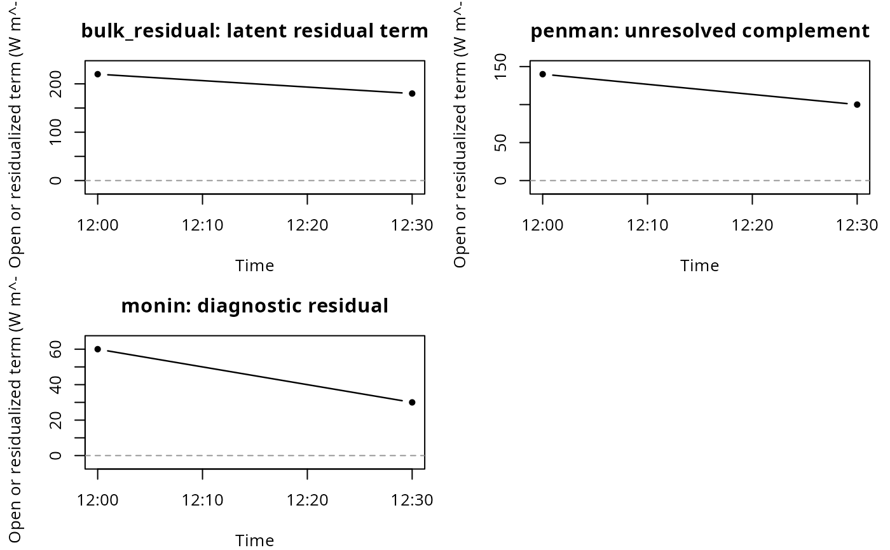
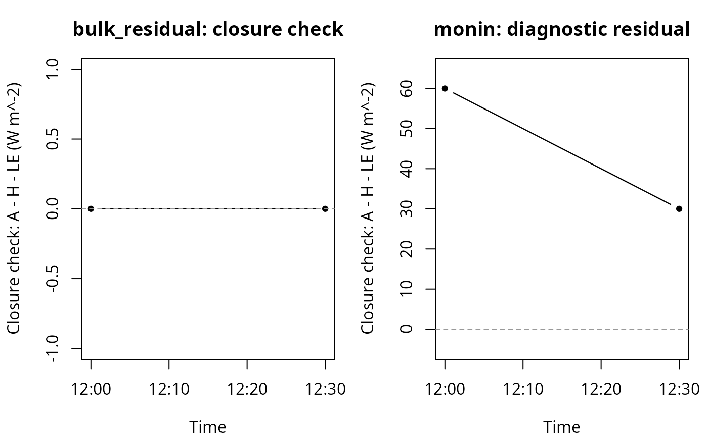
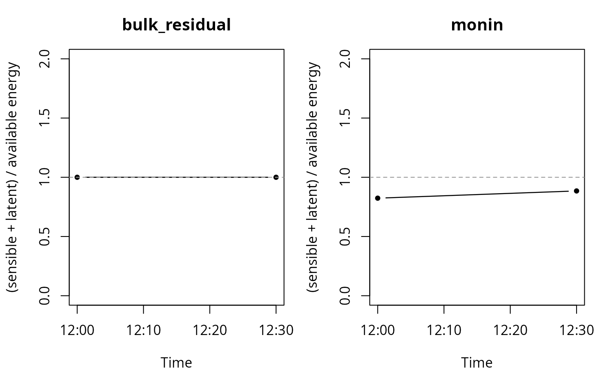

Plot energy-balance closure diagnostics
Source:R/energy_balance_closure.R
plot_energy_balance_closure.RdVisualizes output from energy_balance_closure(). This is a plotting
helper for diagnostics, not a flux model. It does not compute new turbulent
fluxes and does not alter the diagnostic object.
Arguments
- x
Output from
energy_balance_closure().- type
Plot type.
"open_terms"plots open, residualized, or diagnostically unresolved terms."closure_check"plotsavailable_energy - sensible - latentfor paired methods."ratio"plots finite closure ratios for paired methods."residual"is deprecated and maps to"closure_check".- methods
Optional character vector of methods to include.
- layout
Plot layout.
"facets"draws one method per panel."combined"draws all selected methods in one panel.- ylim
Optional y-axis limits. If
NULL, faceted plots use separate y-scales per panel and combined plots use the range of all plotted values.- main
Optional plot title. For faceted plots, this is used as the outer title.
- cex
Character expansion passed to base plotting functions.
- lwd
Line width passed to base plotting functions.
- pch
Point symbol passed to base plotting functions.
- ...
Additional arguments passed to base plotting functions.
Details
The default layout = "facets" is recommended for vignettes because it
draws one panel per method and avoids overplotting. The optional
layout = "combined" draws all selected methods in one panel.
The default type = "open_terms" plots terms that are open,
residualized, or diagnostically unresolved. For Bulk-Residual this is the
residual latent heat term, for Penman it is the unresolved complement, and
for Monin/Profile it is the diagnostic energy-balance residual.
Priestley-Taylor and Bowen are omitted from this plot type because they
partition available energy and do not return an explicit open term.
The type = "closure_check" plot is a technical balance check for
paired sensible/latent heat methods. It shows A - H - LE, where
A = rad_bal - soil_flux. Priestley-Taylor, Bulk-Residual and Bowen
are expected to be close to zero by construction when their values are
finite. Bulk-Residual can still have an open/residualized latent term in
open_terms; its closure_check is near zero because that latent
term closes the balance algebraically. Monin/Profile residuals are
diagnostic. Penman is excluded because it has no paired sensible heat output.
The type = "ratio" plot shows (sensible + latent) / available
energy for paired methods. Penman is excluded and rows marked
low_available_energy are omitted because ratios are unstable near
zero available energy.
The deprecated type = "residual" is mapped to
type = "closure_check" with a warning.
The ylim argument can be used for zoomed diagnostic views. A zoomed
ratio plot must not be read as data removal; it only makes the range around
formal closure readable.
Examples
ws <- structure(
list(
datetime = as.POSIXct(
c("2023-06-30 12:00", "2023-06-30 12:30"),
tz = "UTC"
),
rad_bal = c(400, 300),
soil_flux = c(60, 40),
sensible_bulk = c(120, 80),
latent_bulk_residual = c(220, 180),
latent_penman = c(200, 160),
sensible_monin = c(100, 100),
latent_monin = c(180, 130)
),
class = "weather_station"
)
closure <- energy_balance_closure(
ws,
methods = c("bulk_residual", "penman", "monin")
)
plot_energy_balance_closure(closure, type = "open_terms")

plot_energy_balance_closure(closure, type = "closure_check")

plot_energy_balance_closure(closure, type = "ratio", ylim = c(0, 2))
